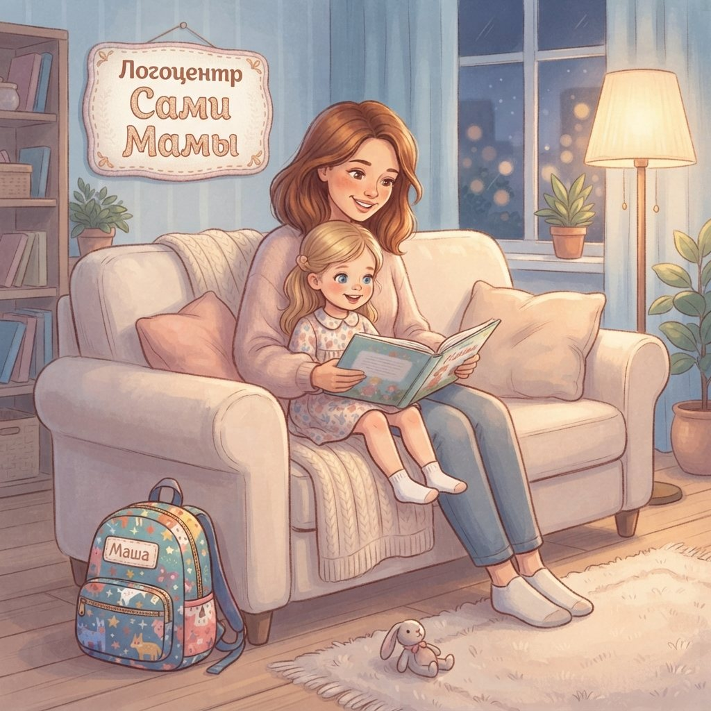
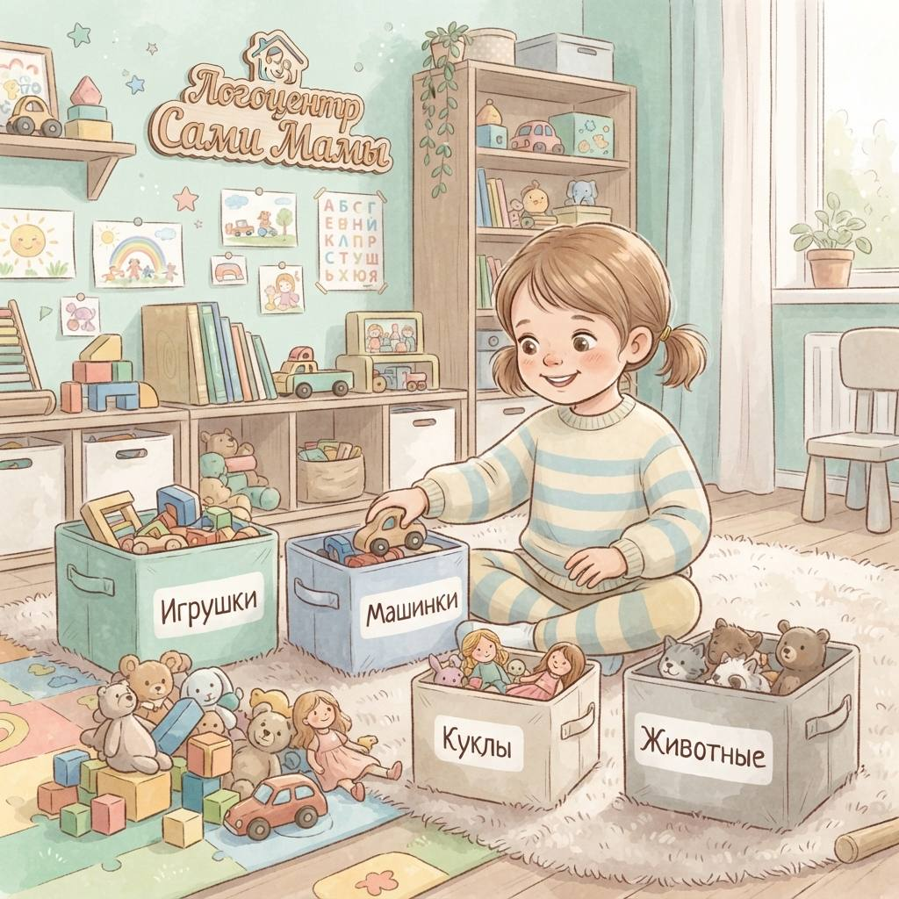
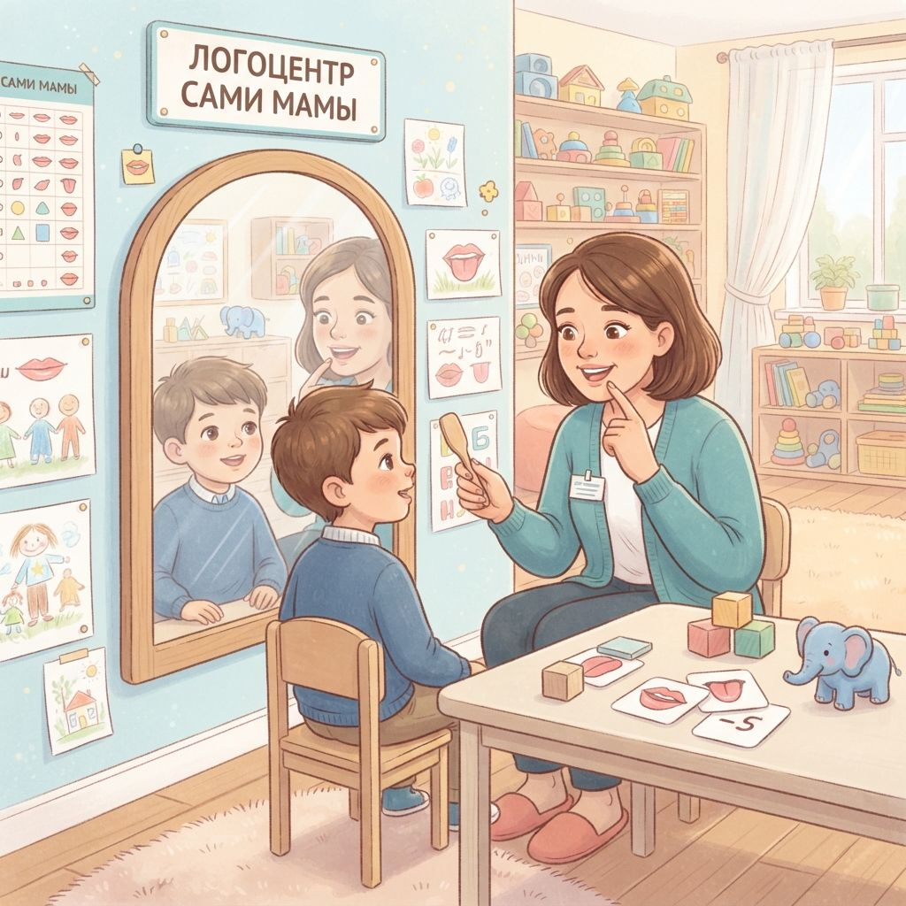
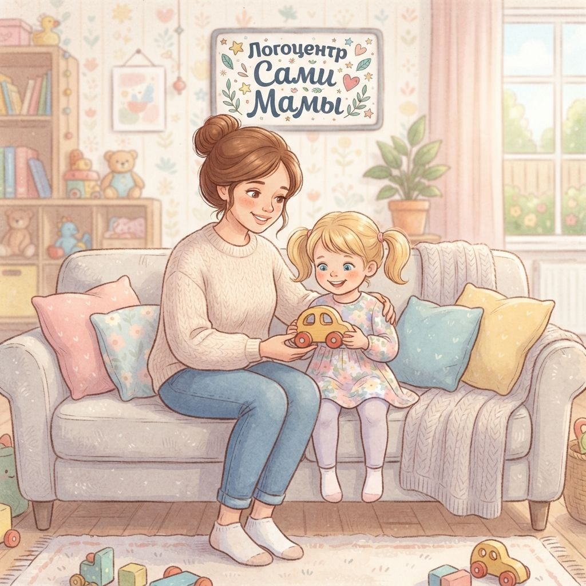
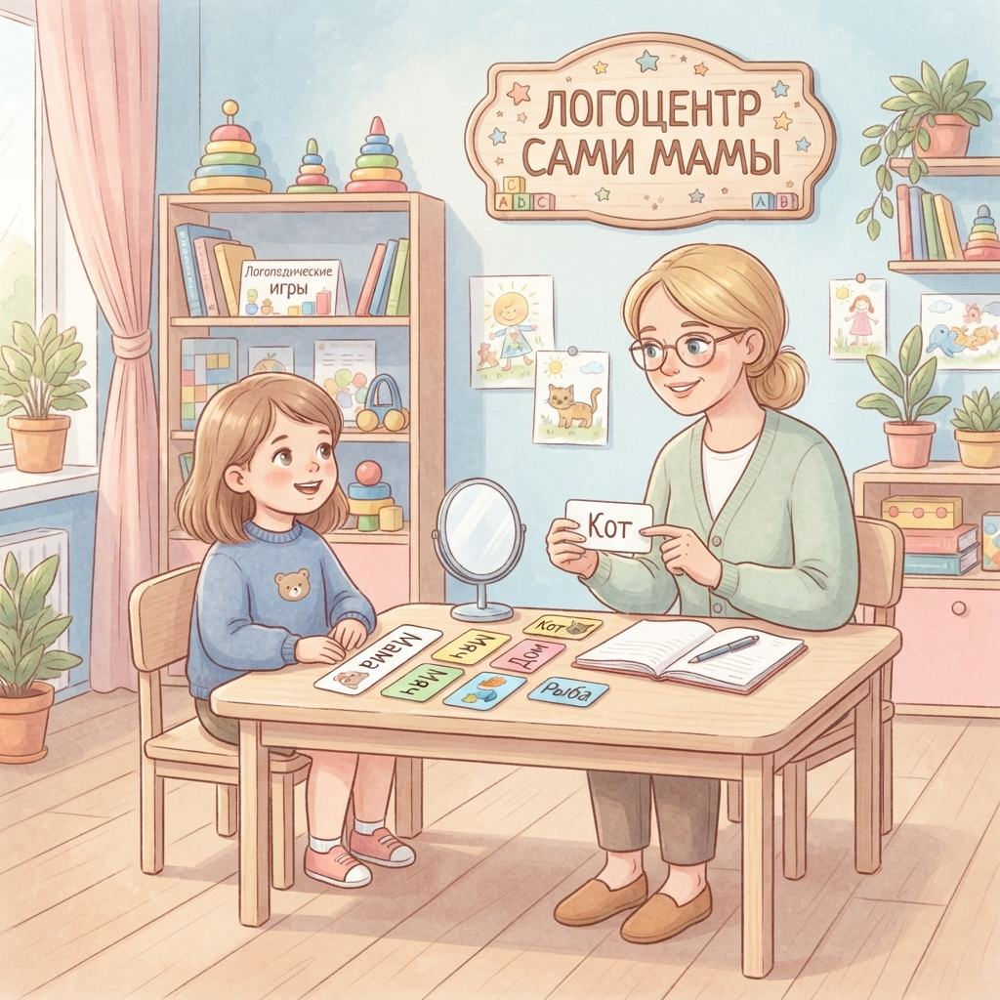
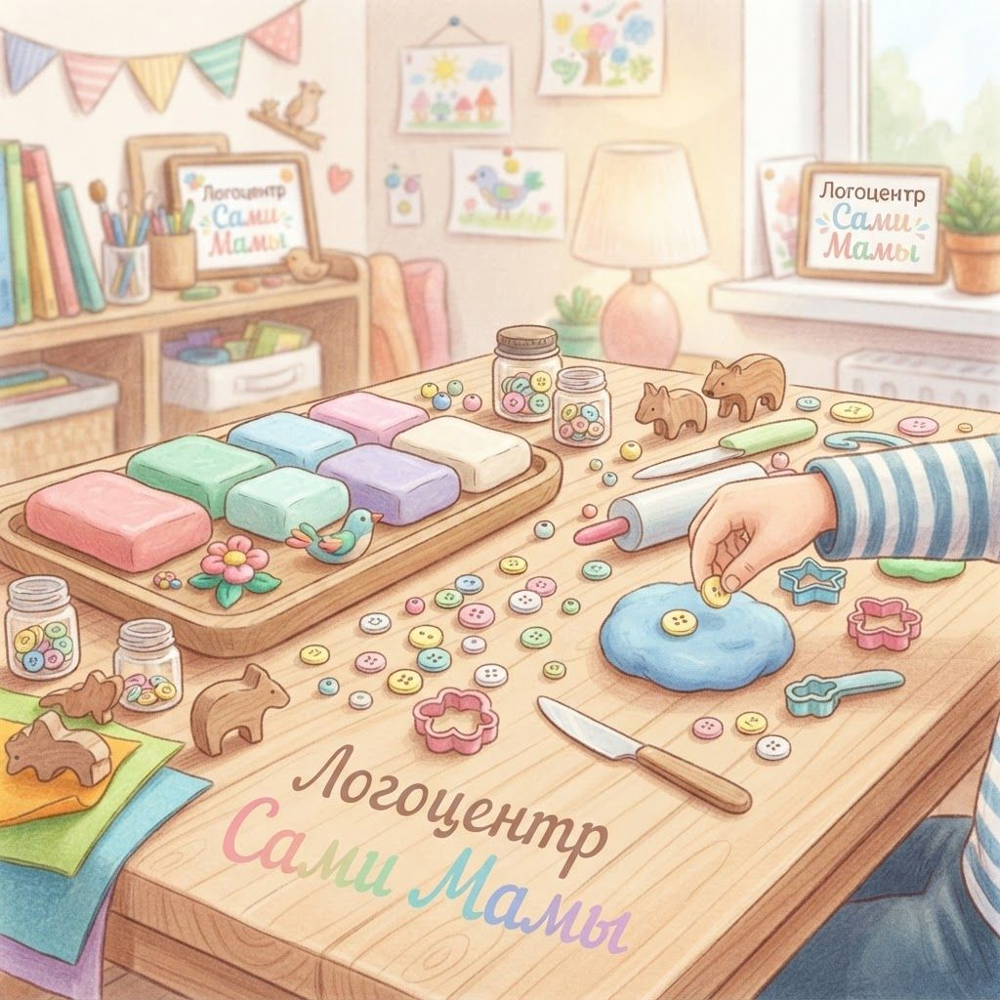
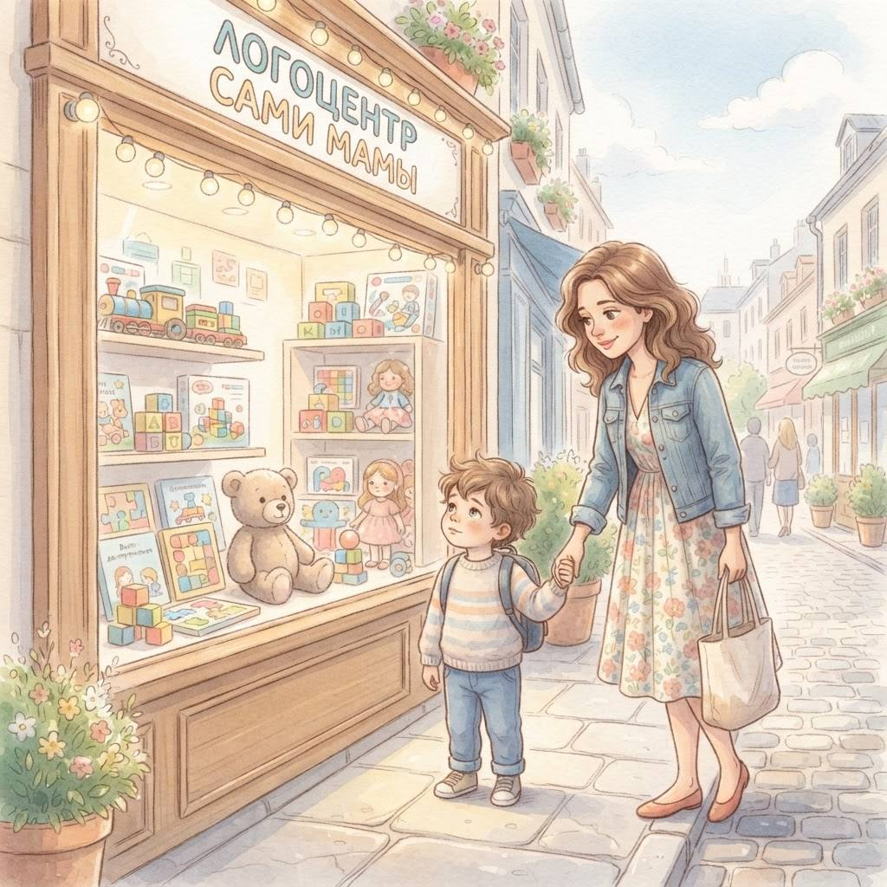
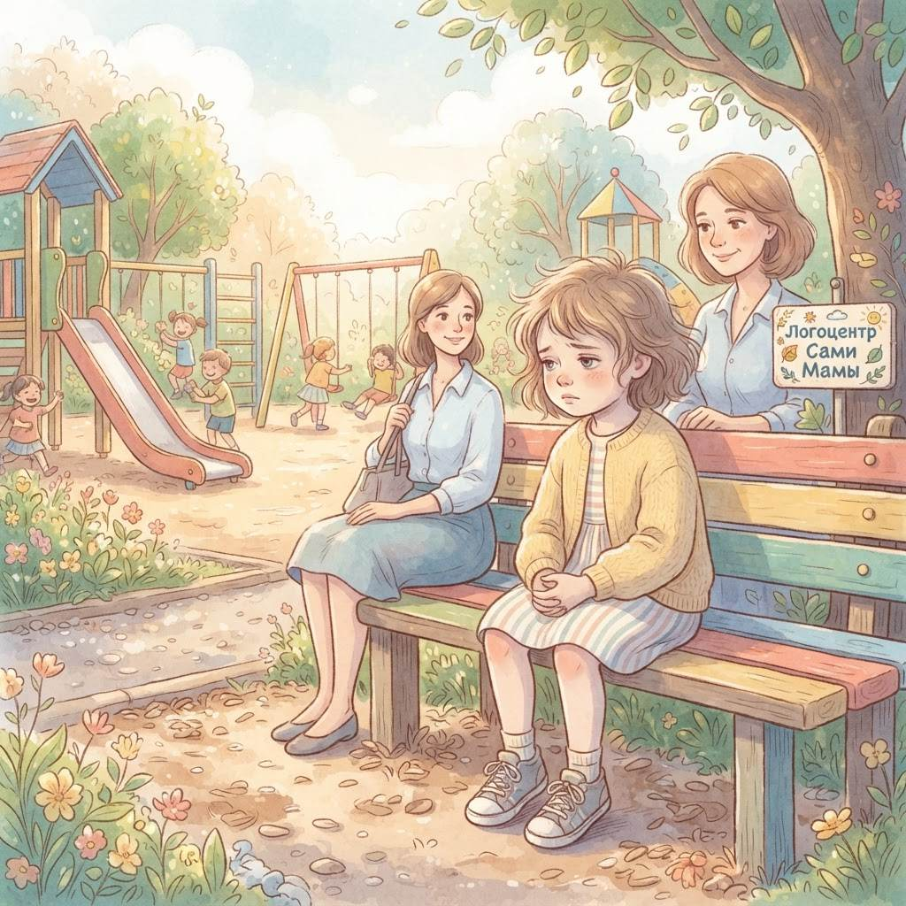
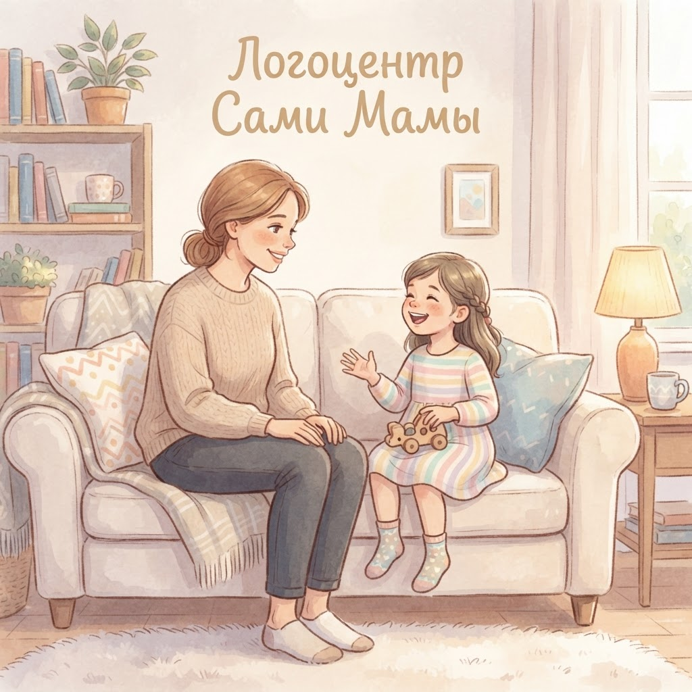
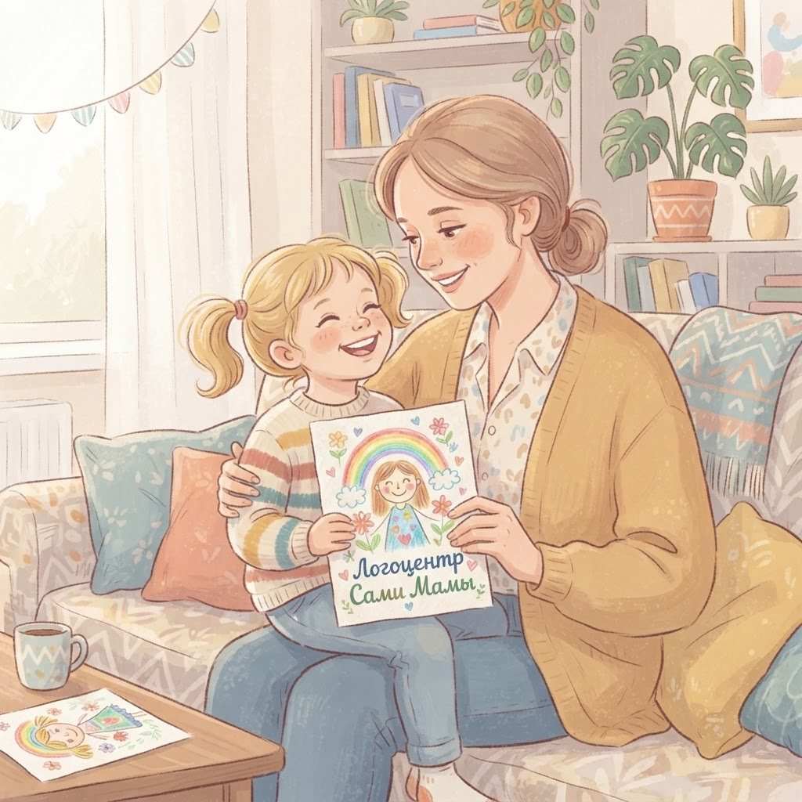

Блог логопедического центра "Сами Мамы" — страница 2

Воскресные слёзы из-за садика: почему это происходит и что делатьВыходные подходят к концу, и вдруг твой обычно весёлый ребёнок начинает хныкать: "Не хочу в садик". Знакомо? Это не каприз и не попытка…Читать далее →
Почему ребёнок не убирает игрушки и как это исправить без скандаловВечер, время ко сну, комната выглядит так, будто по ней прошёл ураган из конструктора и мягких зайцев. Ты просишь убрать, получаешь…Читать далее →
Почему Л даётся труднее всего и как помочь ребёнку его освоитьТы замечаешь, что в словах ребёнка звук Л превращается в что-то другое или исчезает вовсе. "Лопата" становится "вопата", "юла" - "юа". Это…Читать далее →
Ребёнок говорит о себе в третьем лице: когда это норма, а когда повод для беспокойстваТы замечаешь, что твой двухлетка вместо "я хочу" говорит "Дима хочет" - и вроде бы ничего страшного, но где-то на заднем плане уже…Читать далее →
Почему ребёнок переставляет слоги в словах и что с этим делатьТы просишь ребёнка повторить "капуста", а слышишь "копуста". Или ждёшь "пингвина", а получаешь "пиногина". Знакомо? Такие перестановки…Читать далее →
Почему на приёме у логопеда просят шнуровать, а не рычатьТы приходишь на первое занятие, готовишься услышать про звук "р" и постановку шипящих, а логопед достаёт коробку с бусинами и просит…Читать далее →
Ребёнок завидует: что делать маме, когда у других "всё есть"Вот знакомая сцена: ты забираешь сына с прогулки, он молчит всю дорогу домой, а у подъезда выдаёт: "У Кирилла велик с подсветкой, а у меня…Читать далее →
Ребёнок замолкает при чужих: почему это происходит и как вернуть речь без давленияТы приходишь с ребёнком в гости, а он вжимается в тебя и не отвечает даже на простое "привет". Дома он болтает без остановки, комментирует…Читать далее →
Слова наскакивают друг на друга: что делать, если ребёнок комкает речь от волненияТы слушаешь, как ребёнок рассказывает про садик - всё гладко и спокойно. А потом он вспоминает, как во дворе упал велосипед, глаза…Читать далее →
Почему ребёнок говорит "всё вкусно", если еда ему не понравиласьПредставь: ты полдня готовила новое блюдо, ставишь тарелку перед ребёнком, а он морщится, но всё равно выдавливает: "Ммм, вкусно". Или…Читать далее →